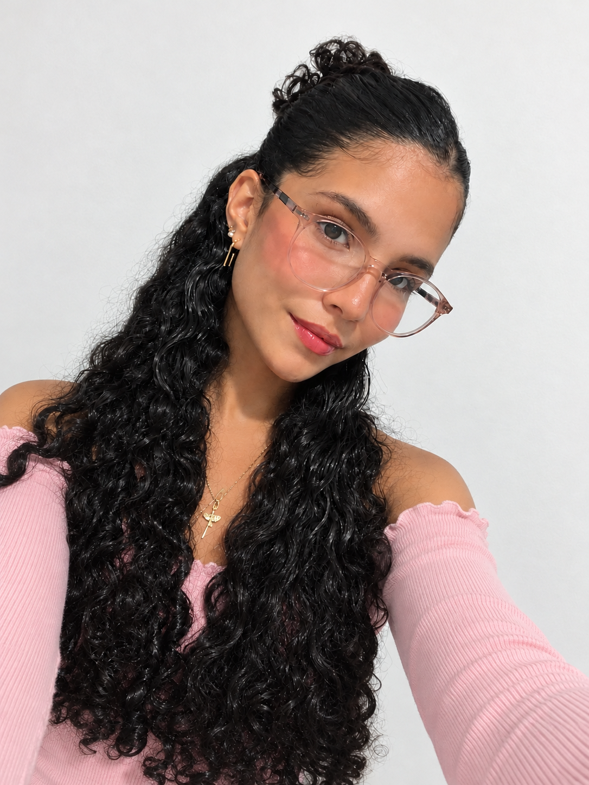

HTML
Estruturação de páginas e conteúdo semântico.
Em desenvolvimentoPORTFÓLIO • DESENVOLVIMENTO WEB
Estudante de Desenvolvimento de Sistemas, apaixonada por transformar ideias em experiências digitais.
Aprendendo hoje, construindo o meu futuro.

criatividade, dedicação e propósito ♡
PRAZER, MARINA!
Sou estudante do médio técnico de tecnologia da informação e estou construindo minha trajetória na tecnologia. O que mais me encanta nessa área é a possibilidade de unir criatividade, lógica e conhecimento para desenvolver soluções úteis para as pessoas.
Durante o curso, venho aprendendo a criar páginas, organizar informações e desenvolver projetos com diferentes tecnologias. Quero continuar evoluindo como desenvolvedora, ampliar minhas habilidades e conquistar uma oportunidade de estágio para aprender na prática.
Quero construir uma versão de mim mesma da qual eu me orgulhe, um projeto de cada vez.
O QUE ESTOU APRENDENDO
Cada tecnologia é uma nova oportunidade de aprender, experimentar e criar.
Estruturação de páginas e conteúdo semântico.
Em desenvolvimentoEstilização, cores, layouts e responsividade.
Em desenvolvimentoLógica de programação e interatividade.
Em aprendizadoDesenvolvimento de aplicações e rotas web.
Em aprendizadoOrganização e consulta de dados em bancos.
Em aprendizadoOrganização, atenção aos detalhes e resolução de problemas.
Em desenvolvimentoMEUS TRABALHOS
Alguns dos projetos que desenvolvi durante minha jornada de aprendizado.
BELEZA • AGENDAMENTO
Projeto voltado ao universo da beleza, com foco na organização e apresentação de serviços de unhas.
EDUCAÇÃO • ORGANIZAÇÃO
Projeto acadêmico pensado para apoiar a organização dos estudos e das tarefas dos estudantes.
TECNOLOGIA • INOVAÇÃO
Projeto desenvolvido durante o curso, explorando ideias e soluções ligadas ao universo da tecnologia.
Os projetos representam meu processo de aprendizado. As descrições e tecnologias devem corresponder às funcionalidades presentes em cada repositório.
VAMOS CONVERSAR?
Estou em busca de oportunidades para aprender, colaborar e crescer na área de tecnologia. Será um prazer conhecer novas ideias e projetos.
Conheça meu GitHub ↗Para conversar sobre oportunidades ou conhecer meus trabalhos, acesse meu perfil no GitHub.
Este portfólio não solicita nem armazena seus dados pessoais por meio de um formulário.